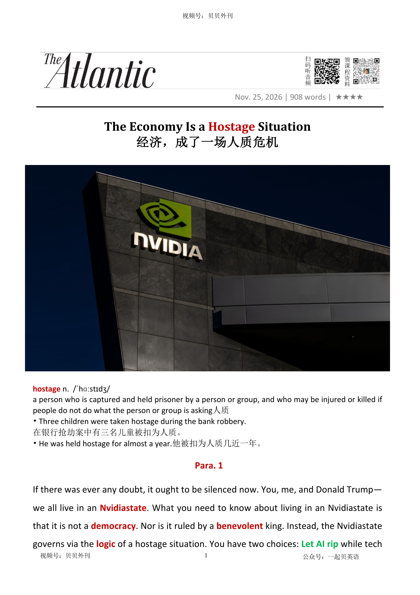

02 HEADLINE / 标题中英文解释
The Economy Is a Hostage Situation
经济，成了一场人质危机
hostage
人质
a person who is captured and held prisoner by a person or group, and who may be injured or killed if people do not do what the person or group is asking
The Economy Is a Hostage Situation
经济，成了一场人质危机
人质
a person who is captured and held prisoner by a person or group, and who may be injured or killed if people do not do what the person or group is asking文章用“英伟达国家”和“人质经济”两个比喻批评黄仁勋复职。
黄仁勋离开仅11天便重返英伟达，科技股随即强势反弹，英伟达股价上涨31%。
支持者认为他是AI繁荣与美国科技领导力不可替代的核心，没有他，投资者信心和AI泡沫都可能崩塌。
作者认为，这种说法掩盖了真正的利益：政府、投资者和科技公司需要维持由循环融资、巨额债务和持续采购芯片支撑的AI热潮，同时借黄仁勋回归树立“推动AI的人可以凌驾于规则之上”的先例。
民调与国会议员的质疑并未改变结果。
文章最终警告，当经济安全、国家安全和退休储蓄被用作交换服从的筹码时，社会面对的已不只是公司人事问题，而是一场以经济崩盘相威胁的“人质危机”。
The article says that Americans now live in an “Nvidiastate”. This is not a real country.
It is a way of saying that Nvidia and its CEO have become too important to the economy. People seem to have only two choices: allow AI leaders to act without limits, or risk a recession.
Jensen Huang returned to Nvidia only eleven days after leaving the company. Shareholders, Silicon Valley leaders and President Trump had all pushed for his return.
The stock market reacted strongly. Nvidia shares rose 31%, and other major American stock indexes also jumped.
Supporters say Huang is the central person in the AI boom. They believe Nvidia, American technology and investor confidence all depend on him.
Without Huang, they fear that the AI bubble may burst. The writer thinks this argument is dangerous.
Many AI companies have promised to spend huge amounts of money on chips. The government and business leaders therefore want the AI boom to continue.
Huang's return also sends a message that important technology leaders may be treated as if they are above the law. Many ordinary Americans and members of Congress are worried about national security and Nvidia's relationship with China.
However, their concerns did not stop Huang's return. The article calls this an AI hostage economy: people are promised progress and economic safety, but are warned that regulation or accountability could make everything collapse.
英伟达国度概念引入（Para 1） ├─ 核心定义：非民主、非仁君统治 ├─ 运行逻辑：人质困境式二元选择 └─ 底层矛盾：放任AI发展，或直面经济衰退 黄仁勋复职事件（Para 2-4） ├─ 事件经过：多方施压、特朗普介入促成回归 ├─ 市场反应：美股大幅反弹，英伟达股价暴涨 └─ 主流叙事：黄仁勋是AI繁荣不可缺少的核心 复职背后真实诉求（Para 5-6） ├─ 说辞漏洞：以AI竞赛为理由的逻辑站不住脚 ├─ 首要目标：维系高负债的AI繁荣、稳住经济 └─ 深层目的：树立科技巨头可以不受约束的先例 各方反应与民意反差（Para 7） ├─ 精英喝彩：马斯克、投资人公开表示支持 ├─ 民意相反：多数民众担忧国家安全受威胁 └─ 事实错位：总统观点和大众调查结果相悖 英伟达国度的本质（Para 8-9） ├─ 无视民意：两党议员不满，国会听证将至 ├─ 经济绑架：经济高度绑定单一企业与个人 └─ 人质经济：用发展红利换取放弃监管问责
If there was ever any doubt, it ought to be silenced now. You, me, and Donald Trump— we all live in an Nvidiastate英伟达国家. What you need to know about living in an Nvidiastate is that it is not a democracy民主国家. Nor is it ruled by a benevolent仁慈的 king. Instead, the Nvidiastate governs via the logic思维方式 of a hostage人质 situation. You have two choices: Let AI rip撕破 while tech leaders act with impunity不受惩罚, or watch the economy enter a recession经济衰退.
如果说此前还有人对此心存疑虑，那么现在，一切疑虑都该烟消云散了。你、我，还有特朗普——我们所有人都生活在“英伟达国家”。在这样一个国家，你首先需要明白的是：这里没有民主，也没有一位仁慈的君主在发号施令。相反，英伟达国的统治逻辑，更像是一场人质劫持。你只有两个选择：要么任由人工智能失控狂飙，放任科技巨头为所欲为；要么眼睁睁看着整个经济陷入衰退。
If you don’t believe me, just read the news. Jensen Huang, Nvidia’s cofounder and CEO, was reinstated使恢复原职 today by the company’s board after more than a week of whinging抱怨 from shareholders, Silicon Valley leaders, and Trump. Eleven days. One Scaramucci. There’s milk in my refrigerator that was bought before Huang’s downfall衰落, and I may pour a glass to mark his return. Huang had resigned in mid-November after allegations that he had had relationships with at least one employee, as well as a client who was allegedly an intelligence asset for the Chinese government. Trump, who was reportedly briefed介绍 multiple times about Huang’s affair with the suspected被怀疑的 spy, intervened出面 with the board to broker经纪人 his return.
如果你不相信，不妨看看新闻。英伟达联合创始人兼首席执行官黄仁勋，在经历了一个多星期来自股东、硅谷领袖和特朗普的轮番抱怨之后，今天终于得到公司董事会恢复任命。11天。一个“斯卡拉穆奇任期”。我冰箱里还有牛奶，是在黄仁勋倒台之前买的；或许，我该倒上一杯，以此庆祝他的归来。11月中旬，黄仁勋被曝曾与至少一名员工，以及一名据称是中国政府情报人员的客户发生关系，随后辞职。据报道，特朗普曾多次听取有关黄仁勋与这名疑似间谍有染的汇报，并出面斡旋，促使董事会同意他回归。
Because we live in an Nvidiastate, one man’s reinstatement恢复原职 was enough to change the trajectory轨道 of the entire stock market. Tech stocks, which sold off sharply late last week, rebounded反弹 aggressively. Nasdaq100 futures期货 went up so fast, they briefly halted停止 trading this morning. Nvidia shares jumped 31 percent. The S&P 500 went up 4.7 percent, and the Nasdaq roared up 6.4 percent. The Dow Jones Industrial Average gained 1,463 points. At the time of this writing, all three averages are on pace for their best day in 19 months.
由于我们生活在英伟达国，一个人的复职便足以改变整个股票市场的运行轨迹。上周末遭到猛烈抛售的科技股强势反弹。纳斯达克100指数期货上涨得如此之快，以至于今天早上一度暂停交易。英伟达股价飙升31%，标普500指数上涨4.7%，纳斯达克指数猛涨6.4%，道琼斯工业平均指数上涨1463点。截至本文写作时，三大股指都有望创下19个月以来的最佳单日表现。
The rationale全部理由 for this rally团结起来支持 is that Huang is the central figure of the AI boom—that Nvidia, which powers the AI economy and props it up with the company’s investments, is basically an exoskeleton外骨骼 around Huang. With him, AI progress and U.S. tech leadership can continue apace高速地; without him, the music stops, investor confidence falters衰弱, and the AI bubble pops. On November 9, I wrote that, in the eyes of Silicon Valley and Trump, Huang was too big to fail. For 11 days—the window between Huang’s departure and his return—it looked like I was wrong and the shameless无耻的 era of lol大声笑 nothing matters in American politics and technology was winding down. Nope!
这轮暴涨背后的逻辑是：黄仁勋是人工智能热潮的核心人物；英伟达为整个AI经济提供动力，又通过自身投资为其撑腰，而这家公司本身，几乎就像一副围绕黄仁勋构建的外骨骼。他在，人工智能进步和美国科技领导力就能继续高速前进；他不在，音乐便戛然而止，投资者信心随之动摇，AI泡沫也会破裂。11月9日，我曾写道，在硅谷和特朗普眼中，黄仁勋已经“大到不能倒”。从他离职到回归的11天里，我一度以为自己错了，那个厚颜无耻、“反正一切都无所谓”的美国政治与科技时代似乎终于要结束了。结果呢？并没有！
The professed宣称 logic of those calling for Huang’s return was nonsensical愚蠢的. The venture capitalists and shareholders argued that American dominance in the AI race against China depended on Huang’s ability to do whatever he pleased. This impunity included allowing Nvidia leeway自由活动的空间 to potentially skirt环绕…的四周 U.S. export controls and get chips into China, and sleeping with an alleged据称的 Chinese intelligence asset. You might be forgiven for missing the genius聪明才智 of the argument.
那些呼吁黄仁勋复职的人，所宣称的理由简直荒谬。风险投资家和股东声称，美国能否在与中国的人工智能竞赛中保持领先，取决于黄仁勋能否随心所欲地行事。这种“不受约束”甚至包括给英伟达留出余地，让它有可能绕过美国出口管制，把芯片送进中国；也包括纵容他与一名据称是中国情报人员的女性发生关系。你若没能领会这套论证背后的“高明”之处，也完全情有可原。
Rather than control chip access to China, what the president and Silicon Valley’s most shameless leaders really seem to want is twofold由两部分组成的. First, they—and especially Trump— want the circularly funded, debt-laden充满……的 AI boom propping up the global economy to continue继续保持高速, in part because many of these AI companies have extremely large financial commitments on the books账簿 to keep purchasing chips. Second, they want to set a precedent可援用参考的具体例子. Huang’s return is a signal that those driving the AI boom are, in the eyes of the current administration and the market, above the law. To quote引用 the president, “When you’re a star, they let you do it.”
与其说总统和硅谷那些最不知羞耻的掌权者真正想要的是管控对华芯片出口，不如说他们另有所图，而且目的有二。首先，他们——尤其是特朗普——希望这场靠循环融资维系、债务负担沉重、如今支撑着全球经济的AI热潮能够持续下去。部分原因在于，许多人工智能公司账面上已经背负了极其庞大的财务承诺，必须持续购买芯片。其次，他们还想借此树立一个先例：黄仁勋的回归释放出一个明确信号——在本届政府和市场眼中，那些推动AI热潮的人已经凌驾于法律之上。借用特朗普的一句话：“当你是明星时，他们就会允许你为所欲为。”
Today, the elites上层集团 got what they wished for. “The mistake has been corrected,” Elon Musk posted on X this morning. The investor Jason Calacanis, a cohost of the podcast AllIn, posted, “Daddy’s home!” in reference to Trump stepping in to help the American economy. The hedge-fund manager Bill Ackman argued that “the wisdom of the crowd prevails普遍存在,” which is an odd古怪的 way to characterize描述 the president of the United States intervening in a public company’s board meeting to agitate激烈争论 for a personnel人事部门 change. It’s unclear exactly what Ackman means by “crowd” or even “wisdom.” On November 3, Americans expressed great skepticism怀疑态度 at the polls about data centers, the economy, and AI in general. And a YouGov poll from earlier this month revealed that 54 percent of Americans thought that Jensen Huang’s affair with Alice Huang, the alleged spy, “has definitely or probably compromised使陷入危险 U.S. national security.” (Trump reportedly told Nvidia board members this week that this was not the case.)
今天，精英阶层终于如愿以偿。“错误已经得到纠正。”马斯克今天早上在X上发帖说道。投资人、播客节目《All-In》的联合主持人杰森·卡拉卡尼斯则发文称：“你爹回来了！”这里的“爹”，指的是出手干预、帮助美国经济的特朗普。对冲基金经理比尔·阿克曼则认为，“群众的智慧最终占了上风”。不过，要把美国总统亲自介入一家上市公司的董事会会议、施压推动人事变动，称作“群众智慧”，实在有些古怪。阿克曼口中的“群众”究竟指谁，何谓“智慧”，同样令人费解。11月3日，美国选民已经在投票中对数据中心、经济和人工智能表达了强烈怀疑。本月早些时候的一项YouGov民调还显示，54%的美国人认为，黄仁勋与那名据称是间谍的女性之间的婚外情“肯定或很可能已经损害美国国家安全”。据报道，特朗普本周曾告诉英伟达董事会成员，事实并非如此。
But as we know now, the Nvidiastate is not a democracy. It doesn’t care that lawmakers in both parties—who will grill烧烤 the CEO in December when he testifies作证 in front of Congress—are livid暴怒的 about Huang’s reinstatement and publicly questioning Trump’s involvement. The Nvidiastate does not care about potential subpoenas传票 or congressional investigations. It does not care what might come out about Huang, or Nvidia’s dealings with China, or chip smuggling走私. What the Nvidiastate cares about is the continued reliance of the economy on one industry, one company, and, seemingly, one man. In Nvidiastate, engine of progress drives you.
但如今我们已经看清，英伟达国并不是一个民主国家。两党议员将在12月黄仁勋出席国会听证会时对他展开质询，而他们都对其复职怒不可遏，并公开质疑特朗普是否插手其中；但英伟达国对此毫不在意。它不在乎可能到来的传票，也不在乎国会调查；它不在乎黄仁勋身上还可能曝出什么，也不在乎英伟达与中国的交易或芯片走私问题。英伟达国真正关心的只有一件事：整个经济对一个行业、一家公司，乃至一个男人的持续依赖。在英伟达国里，进步的引擎驱使着你。
This is how it goes in an AI hostage economy. Progress, economic security, superintelligence超级智能, national security, you name it凡是你能想到的—all of it is dangled悬垂 as a carrot胡萝卜 for citizens. But all of it, including your retirement savings, is contingent依情况而定的, according to those in charge. Any bit of accountability问责 or oversight负责 could cause the whole thing to come crashing down. Progress squandered浪费. Just keep calm and do what we say, and nobody gets hurt.
这就是AI人质经济的运作方式。进步、经济安全、超级智能、国家安全——凡是你能想到的，都被当作悬在人们眼前的胡萝卜，诱使公民一路追逐。然而，按照掌权者的说法，所有这一切，包括你的退休储蓄，都是有条件的。任何一点问责、任何一丝监管，都可能让整个体系轰然崩塌，让进步付诸东流。你只管保持冷静，照我们说的做，没人会受到伤害。
人质
a person who is captured and held prisoner by a person or group, and who may be injured or killed if people do not do what the person or group is asking
Three children were taken hostage during the bank robbery. 在银行抢劫案中有三名儿童被扣为人质。
Instead, the Nvidiastate governs via the logic of a hostage situation.
如果说此前还有人对此心存疑虑，那么现在，一切疑虑都该烟消云散了。你、我，还有特朗普——我们所有人都生活在“英伟达国家”。在这样一个国家，你首先需要明白的是：这里没有民主，也没有一位仁慈的君主在发号施令。相反，英伟达国的统治逻辑，更像是一场人质劫持。你只有两个选择：要么任由人工智能失控狂飙，放任科技巨头为所欲为；要么眼睁睁看着整个经济陷入衰退。
英伟达国家；英伟达式国家（比喻英伟达及其人工智能技术 拥有巨大的经济和政治影响力，甚至左右社会运行和人们生活的状态）
a statelike system in which Nvidia and its AI technology wield enormous economic and political power, influencing society and people's lives
We are increasingly living in an Nvidiastate, where the company's technology shapes the global economy. 我们正日益生活在一个“英伟达国家”中，这家公司的技术正在塑造全球经济。
You, me, and Donald Trump— we all live in an Nvidiastate.
如果说此前还有人对此心存疑虑，那么现在，一切疑虑都该烟消云散了。你、我，还有特朗普——我们所有人都生活在“英伟达国家”。在这样一个国家，你首先需要明白的是：这里没有民主，也没有一位仁慈的君主在发号施令。相反，英伟达国的统治逻辑，更像是一场人质劫持。你只有两个选择：要么任由人工智能失控狂飙，放任科技巨头为所欲为；要么眼睁睁看着整个经济陷入衰退。
民主国家
a country which has this system of government
Western democracies西方民主国家
What you need to know about living in an Nvidiastate is that it is not a democracy.
如果说此前还有人对此心存疑虑，那么现在，一切疑虑都该烟消云散了。你、我，还有特朗普——我们所有人都生活在“英伟达国家”。在这样一个国家，你首先需要明白的是：这里没有民主，也没有一位仁慈的君主在发号施令。相反，英伟达国的统治逻辑，更像是一场人质劫持。你只有两个选择：要么任由人工智能失控狂飙，放任科技巨头为所欲为；要么眼睁睁看着整个经济陷入衰退。
仁慈的；善意的；乐善好施的
kind, generous and wanting to help others; showing goodwill
The king was portrayed as a benevolent ruler who cared deeply about the welfare of his people. 这位国王被描绘成一位仁慈的统治者，十分关心臣民的福祉。
Nor is it ruled by a benevolent king.
如果说此前还有人对此心存疑虑，那么现在，一切疑虑都该烟消云散了。你、我，还有特朗普——我们所有人都生活在“英伟达国家”。在这样一个国家，你首先需要明白的是：这里没有民主，也没有一位仁慈的君主在发号施令。相反，英伟达国的统治逻辑，更像是一场人质劫持。你只有两个选择：要么任由人工智能失控狂飙，放任科技巨头为所欲为；要么眼睁睁看着整个经济陷入衰退。
思维方式；解释方法；逻辑
a way of thinking or explaining sth
I fail to see the logic behind his argument.我不明白支持他论据的是什么逻辑。
Instead, the Nvidiastate governs via the logic of a hostage situation.
如果说此前还有人对此心存疑虑，那么现在，一切疑虑都该烟消云散了。你、我，还有特朗普——我们所有人都生活在“英伟达国家”。在这样一个国家，你首先需要明白的是：这里没有民主，也没有一位仁慈的君主在发号施令。相反，英伟达国的统治逻辑，更像是一场人质劫持。你只有两个选择：要么任由人工智能失控狂飙，放任科技巨头为所欲为；要么眼睁睁看着整个经济陷入衰退。
（突然或猛烈地）撕破，裂开
to tear sth or to become torn, often suddenly or violently
I ripped my jeans on the fence.我的牛仔裤在栅栏上划破了。
You have two choices: Let AI rip while tech leaders act with impunity, or watch the economy enter a recession.
如果说此前还有人对此心存疑虑，那么现在，一切疑虑都该烟消云散了。你、我，还有特朗普——我们所有人都生活在“英伟达国家”。在这样一个国家，你首先需要明白的是：这里没有民主，也没有一位仁慈的君主在发号施令。相反，英伟达国的统治逻辑，更像是一场人质劫持。你只有两个选择：要么任由人工智能失控狂飙，放任科技巨头为所欲为；要么眼睁睁看着整个经济陷入衰退。
放任……发展；让……全速运转；释放……的全部潜力
to allow something to develop, expand or operate freely and without restraint; to unleash something with full force
The government is allowing the AI industry to rip, with few restrictions on its expansion. 政府几乎不对人工智能行业的扩张施加限制，任由其快速发展。
不受惩罚
If you say that someone does something with impunity, you disapprove of the fact that they are not punished for doing something bad.
These gangs operate with apparent impunity. 这些犯罪团伙肆意行事，却没有受到惩罚。
You have two choices: Let AI rip while tech leaders act with impunity, or watch the economy enter a recession.
如果说此前还有人对此心存疑虑，那么现在，一切疑虑都该烟消云散了。你、我，还有特朗普——我们所有人都生活在“英伟达国家”。在这样一个国家，你首先需要明白的是：这里没有民主，也没有一位仁慈的君主在发号施令。相反，英伟达国的统治逻辑，更像是一场人质劫持。你只有两个选择：要么任由人工智能失控狂飙，放任科技巨头为所欲为；要么眼睁睁看着整个经济陷入衰退。
经济衰退; 萧条
A recession is a period when the economy of a country is doing badly, for example because industry is producing less and more people are becoming unemployed.
The oil price increases sent Europe into deep recession. 石油价格的上涨使欧洲陷入严重的经济衰退。
You have two choices: Let AI rip while tech leaders act with impunity, or watch the economy enter a recession.
如果说此前还有人对此心存疑虑，那么现在，一切疑虑都该烟消云散了。你、我，还有特朗普——我们所有人都生活在“英伟达国家”。在这样一个国家，你首先需要明白的是：这里没有民主，也没有一位仁慈的君主在发号施令。相反，英伟达国的统治逻辑，更像是一场人质劫持。你只有两个选择：要么任由人工智能失控狂飙，放任科技巨头为所欲为；要么眼睁睁看着整个经济陷入衰退。
使恢复原职；使重返岗位
1. to give back a job or position that had been taken away from sb
He was reinstated in his post.他重新回到了自己的岗位。 2. to return sth to its previous position or status把…放回原处；使恢复原状
Jensen Huang, Nvidia’s cofounder and CEO, was reinstated today by the company’s board after more than a week of whinging from shareholders, Silicon Valley leaders, and Trump.
如果你不相信，不妨看看新闻。英伟达联合创始人兼首席执行官黄仁勋，在经历了一个多星期来自股东、硅谷领袖和特朗普的轮番抱怨之后，今天终于得到公司董事会恢复任命。11天。一个“斯卡拉穆奇任期”。我冰箱里还有牛奶，是在黄仁勋倒台之前买的；或许，我该倒上一杯，以此庆祝他的归来。11月中旬，黄仁勋被曝曾与至少一名员工，以及一名据称是中国政府情报人员的客户发生关系，随后辞职。据报道，特朗普曾多次听取有关黄仁勋与这名疑似间谍有染的汇报，并出面斡旋，促使…
（令人厌烦地）抱怨；发牢骚；絮叨
to complain repeatedly in an annoying way, especially about something that is not very important
Some investors continue to whinge about the company's latest business strategy.
Jensen Huang, Nvidia’s cofounder and CEO, was reinstated today by the company’s board after more than a week of whinging from shareholders, Silicon Valley leaders, and Trump.
如果你不相信，不妨看看新闻。英伟达联合创始人兼首席执行官黄仁勋，在经历了一个多星期来自股东、硅谷领袖和特朗普的轮番抱怨之后，今天终于得到公司董事会恢复任命。11天。一个“斯卡拉穆奇任期”。我冰箱里还有牛奶，是在黄仁勋倒台之前买的；或许，我该倒上一杯，以此庆祝他的归来。11月中旬，黄仁勋被曝曾与至少一名员工，以及一名据称是中国政府情报人员的客户发生关系，随后辞职。据报道，特朗普曾多次听取有关黄仁勋与这名疑似间谍有染的汇报，并出面斡旋，促使…
衰落；衰败；垮台；衰落（或衰败、垮台）的原因
the loss of a person's money, power, social position, etc.; the thing that causes this
The sex scandal finally led to his downfall.这桩绯闻最终使他身败名裂。
There’s milk in my refrigerator that was bought before Huang’s downfall, and I may pour a glass to mark his return.
如果你不相信，不妨看看新闻。英伟达联合创始人兼首席执行官黄仁勋，在经历了一个多星期来自股东、硅谷领袖和特朗普的轮番抱怨之后，今天终于得到公司董事会恢复任命。11天。一个“斯卡拉穆奇任期”。我冰箱里还有牛奶，是在黄仁勋倒台之前买的；或许，我该倒上一杯，以此庆祝他的归来。11月中旬，黄仁勋被曝曾与至少一名员工，以及一名据称是中国政府情报人员的客户发生关系，随后辞职。据报道，特朗普曾多次听取有关黄仁勋与这名疑似间谍有染的汇报，并出面斡旋，促使…
介绍; 提供 (信息)
If someone briefs you, especially about a piece of work or a serious matter, they give you information that you need before you do it or consider it.
A Defense Department spokesman briefed reporters. 一位国防部发言人向记者们介绍了情况。
Trump, who was reportedly briefed multiple times about Huang’s affair with the suspected spy, intervened with the board to broker his return.
如果你不相信，不妨看看新闻。英伟达联合创始人兼首席执行官黄仁勋，在经历了一个多星期来自股东、硅谷领袖和特朗普的轮番抱怨之后，今天终于得到公司董事会恢复任命。11天。一个“斯卡拉穆奇任期”。我冰箱里还有牛奶，是在黄仁勋倒台之前买的；或许，我该倒上一杯，以此庆祝他的归来。11月中旬，黄仁勋被曝曾与至少一名员工，以及一名据称是中国政府情报人员的客户发生关系，随后辞职。据报道，特朗普曾多次听取有关黄仁勋与这名疑似间谍有染的汇报，并出面斡旋，促使…
被怀疑的；涉嫌的；疑似的
believed to have done something wrong or illegal, but not yet proven to have done so
The suspected hacker was arrested following an investigation into the cyberattack. 在对这起网络攻击展开调查后，涉嫌实施攻击的黑客被捕。
Trump, who was reportedly briefed multiple times about Huang’s affair with the suspected spy, intervened with the board to broker his return.
如果你不相信，不妨看看新闻。英伟达联合创始人兼首席执行官黄仁勋，在经历了一个多星期来自股东、硅谷领袖和特朗普的轮番抱怨之后，今天终于得到公司董事会恢复任命。11天。一个“斯卡拉穆奇任期”。我冰箱里还有牛奶，是在黄仁勋倒台之前买的；或许，我该倒上一杯，以此庆祝他的归来。11月中旬，黄仁勋被曝曾与至少一名员工，以及一名据称是中国政府情报人员的客户发生关系，随后辞职。据报道，特朗普曾多次听取有关黄仁勋与这名疑似间谍有染的汇报，并出面斡旋，促使…
出面；介入
to become involved in a situation in order to improve or help it
The President intervened personally in the crisis.总统亲自出面处理这场危机。
Trump, who was reportedly briefed multiple times about Huang’s affair with the suspected spy, intervened with the board to broker his return.
如果你不相信，不妨看看新闻。英伟达联合创始人兼首席执行官黄仁勋，在经历了一个多星期来自股东、硅谷领袖和特朗普的轮番抱怨之后，今天终于得到公司董事会恢复任命。11天。一个“斯卡拉穆奇任期”。我冰箱里还有牛奶，是在黄仁勋倒台之前买的；或许，我该倒上一杯，以此庆祝他的归来。11月中旬，黄仁勋被曝曾与至少一名员工，以及一名据称是中国政府情报人员的客户发生关系，随后辞职。据报道，特朗普曾多次听取有关黄仁勋与这名疑似间谍有染的汇报，并出面斡旋，促使…
经纪人; 掮客 2. If a country or government brokers an agreement, a ceasefire, or a round of talks, they try to negotiate or arrange it. 斡旋
1. A broker is a person whose job is to buy and sell securities, foreign money, real estate, or goods for other people.
The United Nations brokered a peace at the end of March. 联合国于3月底促成了一场和平谈判。
Trump, who was reportedly briefed multiple times about Huang’s affair with the suspected spy, intervened with the board to broker his return.
如果你不相信，不妨看看新闻。英伟达联合创始人兼首席执行官黄仁勋，在经历了一个多星期来自股东、硅谷领袖和特朗普的轮番抱怨之后，今天终于得到公司董事会恢复任命。11天。一个“斯卡拉穆奇任期”。我冰箱里还有牛奶，是在黄仁勋倒台之前买的；或许，我该倒上一杯，以此庆祝他的归来。11月中旬，黄仁勋被曝曾与至少一名员工，以及一名据称是中国政府情报人员的客户发生关系，随后辞职。据报道，特朗普曾多次听取有关黄仁勋与这名疑似间谍有染的汇报，并出面斡旋，促使…
恢复原职；复职；恢复原有地位或状态
the act of restoring someone to a former position, job, status or condition
The board is considering the reinstatement of the former CEO after his resignation was overturned. 在前任首席执行官的辞职决定被推翻后，董事会正在考虑让他复职。
Because we live in an Nvidiastate, one man’s reinstatement was enough to change the trajectory of the entire stock market.
由于我们生活在英伟达国，一个人的复职便足以改变整个股票市场的运行轨迹。上周末遭到猛烈抛售的科技股强势反弹。纳斯达克100指数期货上涨得如此之快，以至于今天早上一度暂停交易。英伟达股价飙升31%，标普500指数上涨4.7%，纳斯达克指数猛涨6.4%，道琼斯工业平均指数上涨1463点。截至本文写作时，三大股指都有望创下19个月以来的最佳单日表现。
（射体在空中的）轨道，弹道，轨迹
the curved path of sth that has been fired, hit or thrown into the air
a missile's trajectory导弹的弹道
Because we live in an Nvidiastate, one man’s reinstatement was enough to change the trajectory of the entire stock market.
由于我们生活在英伟达国，一个人的复职便足以改变整个股票市场的运行轨迹。上周末遭到猛烈抛售的科技股强势反弹。纳斯达克100指数期货上涨得如此之快，以至于今天早上一度暂停交易。英伟达股价飙升31%，标普500指数上涨4.7%，纳斯达克指数猛涨6.4%，道琼斯工业平均指数上涨1463点。截至本文写作时，三大股指都有望创下19个月以来的最佳单日表现。
抛售；变卖；出售（部分资产或业务）
to sell assets, shares or part of a business, often quickly or in large quantities; (of investors) to sell investments in response to falling prices or negative news
Investors began to sell off their shares after the company reported disappointing earnings. 公司公布令人失望的财报后，投资者开始抛售股票。
反弹；回升；复苏
to recover or rise again after a fall, decline or setback
The company's shares rebounded sharply after the announcement of its strong quarterly earnings. 在公司公布强劲的季度财报后，其股价大幅反弹。
Tech stocks, which sold off sharply late last week, rebounded aggressively.
由于我们生活在英伟达国，一个人的复职便足以改变整个股票市场的运行轨迹。上周末遭到猛烈抛售的科技股强势反弹。纳斯达克100指数期货上涨得如此之快，以至于今天早上一度暂停交易。英伟达股价飙升31%，标普500指数上涨4.7%，纳斯达克指数猛涨6.4%，道琼斯工业平均指数上涨1463点。截至本文写作时，三大股指都有望创下19个月以来的最佳单日表现。
气势汹汹的；声势浩大的；志在必得的
acting with force and determination in order to succeed
an aggressive advertising campaign一场声势浩大的广告宣传活动
期货；期货合约（买卖双方约定在未来某一特定日期，以预先确定的价格 交易某种资产的金融合约）
financial contracts that obligate buyers and sellers to trade an asset at a predetermined price on a specified future date
U.S. stock futures fell sharply after the announcement of new trade restrictions. 美国宣布新的贸易限制措施后，美国股指期货大幅下跌。
Nasdaq100 futures went up so fast, they briefly halted trading this morning.
由于我们生活在英伟达国，一个人的复职便足以改变整个股票市场的运行轨迹。上周末遭到猛烈抛售的科技股强势反弹。纳斯达克100指数期货上涨得如此之快，以至于今天早上一度暂停交易。英伟达股价飙升31%，标普500指数上涨4.7%，纳斯达克指数猛涨6.4%，道琼斯工业平均指数上涨1463点。截至本文写作时，三大股指都有望创下19个月以来的最佳单日表现。
（使）停止，停下
to stop; to make sb/sth stop
She walked towards him and then halted.她向他走去，然后停下。
Nasdaq100 futures went up so fast, they briefly halted trading this morning.
由于我们生活在英伟达国，一个人的复职便足以改变整个股票市场的运行轨迹。上周末遭到猛烈抛售的科技股强势反弹。纳斯达克100指数期货上涨得如此之快，以至于今天早上一度暂停交易。英伟达股价飙升31%，标普500指数上涨4.7%，纳斯达克指数猛涨6.4%，道琼斯工业平均指数上涨1463点。截至本文写作时，三大股指都有望创下19个月以来的最佳单日表现。
（价格、数量、声音等）猛增；急剧上升；骤然增强
to increase or rise very quickly and dramatically, especially in volume, price or intensity
Oil prices roared up as fears of supply disruptions intensified. 随着人们对供应中断的担忧加剧，油价飙升。
全部理由; 根本原因
The rationale for a course of action, practice, or belief is the set of reasons on which it is based.
However, the rationale for such initiatives is not, of course, solely economic. 但是，这些积极行动的根本原因当然不全是出于经济目的。
The rationale for this rally is that Huang is the central figure of the AI boom—that Nvidia, which powers the AI economy and props it up with the company’s investments, is basically an exoskeleton around Huang.
这轮暴涨背后的逻辑是：黄仁勋是人工智能热潮的核心人物；英伟达为整个AI经济提供动力，又通过自身投资为其撑腰，而这家公司本身，几乎就像一副围绕黄仁勋构建的外骨骼。他在，人工智能进步和美国科技领导力就能继续高速前进；他不在，音乐便戛然而止，投资者信心随之动摇，AI泡沫也会破裂。11月9日，我曾写道，在硅谷和特朗普眼中，黄仁勋已经“大到不能倒”。从他离职到回归的11天里，我一度以为自己错了，那个厚颜无耻、“反正一切都无所谓”的美国政治与科技时…
（使）团结起来支持
to come together or bring people together in support
After a furious late rally, they finally scored.他们后来状态恢复迅速，终于得分了。
The rationale for this rally is that Huang is the central figure of the AI boom—that Nvidia, which powers the AI economy and props it up with the company’s investments, is basically an exoskeleton around Huang.
这轮暴涨背后的逻辑是：黄仁勋是人工智能热潮的核心人物；英伟达为整个AI经济提供动力，又通过自身投资为其撑腰，而这家公司本身，几乎就像一副围绕黄仁勋构建的外骨骼。他在，人工智能进步和美国科技领导力就能继续高速前进；他不在，音乐便戛然而止，投资者信心随之动摇，AI泡沫也会破裂。11月9日，我曾写道，在硅谷和特朗普眼中，黄仁勋已经“大到不能倒”。从他离职到回归的11天里，我一度以为自己错了，那个厚颜无耻、“反正一切都无所谓”的美国政治与科技时…
支撑；撑住 2. to support or maintain something artificially, especially a failing business, economy or financial market（人为）支撑；维持；扶持
1. to support something physically or prevent it from falling
The government has injected billions of dollars into the banking sector to prop up struggling lenders. 政府向银行业注入数十亿美元，以扶持陷入困境的贷款机构。
外骨骼；外壳
the hard outer covering that protects the body of some animals, such as insects and crabs
Insects have an exoskeleton that protects their bodies. 昆虫拥有保护身体的外骨骼。
The rationale for this rally is that Huang is the central figure of the AI boom—that Nvidia, which powers the AI economy and props it up with the company’s investments, is basically an exoskeleton around Huang.
这轮暴涨背后的逻辑是：黄仁勋是人工智能热潮的核心人物；英伟达为整个AI经济提供动力，又通过自身投资为其撑腰，而这家公司本身，几乎就像一副围绕黄仁勋构建的外骨骼。他在，人工智能进步和美国科技领导力就能继续高速前进；他不在，音乐便戛然而止，投资者信心随之动摇，AI泡沫也会破裂。11月9日，我曾写道，在硅谷和特朗普眼中，黄仁勋已经“大到不能倒”。从他离职到回归的11天里，我一度以为自己错了，那个厚颜无耻、“反正一切都无所谓”的美国政治与科技时…
高速地；迅速地
at a fast speed; quickly
to continue/grow/proceed/develop apace 继续保持高速；迅速生长；进展迅速；高速发展
With him, AI progress and U.S. tech leadership can continue apace; without him, the music stops, investor confidence falters, and the AI bubble pops.
这轮暴涨背后的逻辑是：黄仁勋是人工智能热潮的核心人物；英伟达为整个AI经济提供动力，又通过自身投资为其撑腰，而这家公司本身，几乎就像一副围绕黄仁勋构建的外骨骼。他在，人工智能进步和美国科技领导力就能继续高速前进；他不在，音乐便戛然而止，投资者信心随之动摇，AI泡沫也会破裂。11月9日，我曾写道，在硅谷和特朗普眼中，黄仁勋已经“大到不能倒”。从他离职到回归的11天里，我一度以为自己错了，那个厚颜无耻、“反正一切都无所谓”的美国政治与科技时…
衰弱；衰退；衰落
to become weaker or less effective
The economy shows no signs of faltering.经济没有衰退的迹象。
With him, AI progress and U.S. tech leadership can continue apace; without him, the music stops, investor confidence falters, and the AI bubble pops.
这轮暴涨背后的逻辑是：黄仁勋是人工智能热潮的核心人物；英伟达为整个AI经济提供动力，又通过自身投资为其撑腰，而这家公司本身，几乎就像一副围绕黄仁勋构建的外骨骼。他在，人工智能进步和美国科技领导力就能继续高速前进；他不在，音乐便戛然而止，投资者信心随之动摇，AI泡沫也会破裂。11月9日，我曾写道，在硅谷和特朗普眼中，黄仁勋已经“大到不能倒”。从他离职到回归的11天里，我一度以为自己错了，那个厚颜无耻、“反正一切都无所谓”的美国政治与科技时…
无耻的
If you describe someone as shameless, you mean that they should be ashamed of their behaviour, which is unacceptable to other people.
...a shameless attempt to stifle democratic debate. …一个压制民主辩论的无耻企图。
For 11 days—the window between Huang’s departure and his return—it looked like I was wrong and the shameless era of lol nothing matters in American politics and technology was winding down.
这轮暴涨背后的逻辑是：黄仁勋是人工智能热潮的核心人物；英伟达为整个AI经济提供动力，又通过自身投资为其撑腰，而这家公司本身，几乎就像一副围绕黄仁勋构建的外骨骼。他在，人工智能进步和美国科技领导力就能继续高速前进；他不在，音乐便戛然而止，投资者信心随之动摇，AI泡沫也会破裂。11月9日，我曾写道，在硅谷和特朗普眼中，黄仁勋已经“大到不能倒”。从他离职到回归的11天里，我一度以为自己错了，那个厚颜无耻、“反正一切都无所谓”的美国政治与科技时…
大声笑；哈哈（常用于网络聊天，表示觉得好笑或语气轻松）
laughing out loud
I can't believe you actually did that lol. 我真不敢相信你居然真的那么做了，哈哈。
For 11 days—the window between Huang’s departure and his return—it looked like I was wrong and the shameless era of lol nothing matters in American politics and technology was winding down.
这轮暴涨背后的逻辑是：黄仁勋是人工智能热潮的核心人物；英伟达为整个AI经济提供动力，又通过自身投资为其撑腰，而这家公司本身，几乎就像一副围绕黄仁勋构建的外骨骼。他在，人工智能进步和美国科技领导力就能继续高速前进；他不在，音乐便戛然而止，投资者信心随之动摇，AI泡沫也会破裂。11月9日，我曾写道，在硅谷和特朗普眼中，黄仁勋已经“大到不能倒”。从他离职到回归的11天里，我一度以为自己错了，那个厚颜无耻、“反正一切都无所谓”的美国政治与科技时…
逐渐放缓；逐步结束；放松下来
to gradually become less active, intense or busy, or to relax after a period of activity
The company plans to wind down its operations over the next six months. 这家公司计划在未来六个月内逐步结束运营。
宣称；公开表明
to state openly that you have a particular belief, feeling, etc.
He professed his admiration for their work.他表示钦佩他们的工作。
The professed logic of those calling for Huang’s return was nonsensical.
那些呼吁黄仁勋复职的人，所宣称的理由简直荒谬。风险投资家和股东声称，美国能否在与中国的人工智能竞赛中保持领先，取决于黄仁勋能否随心所欲地行事。这种“不受约束”甚至包括给英伟达留出余地，让它有可能绕过美国出口管制，把芯片送进中国；也包括纵容他与一名据称是中国情报人员的女性发生关系。你若没能领会这套论证背后的“高明”之处，也完全情有可原。
愚蠢的; 可笑的; 不真实的
If you say that something is nonsensical, you think it is stupid, ridiculous, or untrue.
It seemed to me that Robert's arguments were nonsensical. 在我看来，罗伯特的论点很荒谬。
The professed logic of those calling for Huang’s return was nonsensical.
那些呼吁黄仁勋复职的人，所宣称的理由简直荒谬。风险投资家和股东声称，美国能否在与中国的人工智能竞赛中保持领先，取决于黄仁勋能否随心所欲地行事。这种“不受约束”甚至包括给英伟达留出余地，让它有可能绕过美国出口管制，把芯片送进中国；也包括纵容他与一名据称是中国情报人员的女性发生关系。你若没能领会这套论证背后的“高明”之处，也完全情有可原。
风险投资家；风险资本家
a person who invests money in new businesses or startups with high growth potential
The venture capitalist invested millions of dollars in the promising AI startup. 这位风险投资家向这家前景看好的人工智能初创公司投资了数百万美元。
自由活动的空间
the amount of freedom that you have to change sth or to do sth in the way you want to
How much leeway should parents give their children?父母应该给孩子留多少自由的空间？
This impunity included allowing Nvidia leeway to potentially skirt U.S. export controls and get chips into China, and sleeping with an alleged Chinese intelligence asset.
那些呼吁黄仁勋复职的人，所宣称的理由简直荒谬。风险投资家和股东声称，美国能否在与中国的人工智能竞赛中保持领先，取决于黄仁勋能否随心所欲地行事。这种“不受约束”甚至包括给英伟达留出余地，让它有可能绕过美国出口管制，把芯片送进中国；也包括纵容他与一名据称是中国情报人员的女性发生关系。你若没能领会这套论证背后的“高明”之处，也完全情有可原。
环绕…的四周；位于…的边缘；沿…的边缘走
1. to be or go around the edge of sth
They followed the road that skirted the lake.他们顺着湖边公路走。 2. to avoid talking about a subject, especially because it is difficult or embarrassing绕开，回避
This impunity included allowing Nvidia leeway to potentially skirt U.S. export controls and get chips into China, and sleeping with an alleged Chinese intelligence asset.
那些呼吁黄仁勋复职的人，所宣称的理由简直荒谬。风险投资家和股东声称，美国能否在与中国的人工智能竞赛中保持领先，取决于黄仁勋能否随心所欲地行事。这种“不受约束”甚至包括给英伟达留出余地，让它有可能绕过美国出口管制，把芯片送进中国；也包括纵容他与一名据称是中国情报人员的女性发生关系。你若没能领会这套论证背后的“高明”之处，也完全情有可原。
聪明才智，天资；天赋
unusually great intelligence, skill or artistic ability
the genius of Shakespeare莎士比亚的天赋
You might be forgiven for missing the genius of the argument.
那些呼吁黄仁勋复职的人，所宣称的理由简直荒谬。风险投资家和股东声称，美国能否在与中国的人工智能竞赛中保持领先，取决于黄仁勋能否随心所欲地行事。这种“不受约束”甚至包括给英伟达留出余地，让它有可能绕过美国出口管制，把芯片送进中国；也包括纵容他与一名据称是中国情报人员的女性发生关系。你若没能领会这套论证背后的“高明”之处，也完全情有可原。
由两部分组成的；有两部分的
1. consisting of two parts
The problem was twofold.这个问题分两个部分。 2. twice as much or as many两倍的
Rather than control chip access to China, what the president and Silicon Valley’s most shameless leaders really seem to want is twofold.
与其说总统和硅谷那些最不知羞耻的掌权者真正想要的是管控对华芯片出口，不如说他们另有所图，而且目的有二。首先，他们——尤其是特朗普——希望这场靠循环融资维系、债务负担沉重、如今支撑着全球经济的AI热潮能够持续下去。部分原因在于，许多人工智能公司账面上已经背负了极其庞大的财务承诺，必须持续购买芯片。其次，他们还想借此树立一个先例：黄仁勋的回归释放出一个明确信号——在本届政府和市场眼中，那些推动AI热潮的人已经凌驾于法律之上。借用特朗普的一句…
圆形的；环形的；圆的
1. shaped like a circle; round
a circular building圆形建筑物 2. moving around in a circle环行的；绕圈的
（用于构成形容词）充满……的；装载……的
used to form adjectives showing that something is full of or loaded with the thing mentioned
Calorie-laden cream cakes. 高热量的奶油蛋糕。
First, they—and especially Trump— want the circularly funded, debt-laden AI boom propping up the global economy to continue, in part because many of these AI companies have extremely large financial commitments on the books to keep purchasing chips.
与其说总统和硅谷那些最不知羞耻的掌权者真正想要的是管控对华芯片出口，不如说他们另有所图，而且目的有二。首先，他们——尤其是特朗普——希望这场靠循环融资维系、债务负担沉重、如今支撑着全球经济的AI热潮能够持续下去。部分原因在于，许多人工智能公司账面上已经背负了极其庞大的财务承诺，必须持续购买芯片。其次，他们还想借此树立一个先例：黄仁勋的回归释放出一个明确信号——在本届政府和市场眼中，那些推动AI热潮的人已经凌驾于法律之上。借用特朗普的一句…
（企业的）账簿
the written records of the financial affairs of a business
to do the books (= to check the accounts) 查账
First, they—and especially Trump— want the circularly funded, debt-laden AI boom propping up the global economy to continue, in part because many of these AI companies have extremely large financial commitments on the books to keep purchasing chips.
与其说总统和硅谷那些最不知羞耻的掌权者真正想要的是管控对华芯片出口，不如说他们另有所图，而且目的有二。首先，他们——尤其是特朗普——希望这场靠循环融资维系、债务负担沉重、如今支撑着全球经济的AI热潮能够持续下去。部分原因在于，许多人工智能公司账面上已经背负了极其庞大的财务承诺，必须持续购买芯片。其次，他们还想借此树立一个先例：黄仁勋的回归释放出一个明确信号——在本届政府和市场眼中，那些推动AI热潮的人已经凌驾于法律之上。借用特朗普的一句…
可援用参考的具体例子；实例；范例
1. an official action or decision that has happened in the past and that is seen as an example or a rule to be followed in a similar situation later
The ruling set a precedent for future libel cases.这项裁决为今后的诽谤案提供了判例。 2. a similar action or event that happened earlier先前出现的事例；前例；先例
Second, they want to set a precedent.
与其说总统和硅谷那些最不知羞耻的掌权者真正想要的是管控对华芯片出口，不如说他们另有所图，而且目的有二。首先，他们——尤其是特朗普——希望这场靠循环融资维系、债务负担沉重、如今支撑着全球经济的AI热潮能够持续下去。部分原因在于，许多人工智能公司账面上已经背负了极其庞大的财务承诺，必须持续购买芯片。其次，他们还想借此树立一个先例：黄仁勋的回归释放出一个明确信号——在本届政府和市场眼中，那些推动AI热潮的人已经凌驾于法律之上。借用特朗普的一句…
引用；引述
to repeat the exact words that another person has said or written
He quoted a passage from the minister's speech.他引用了部长的一段讲话。
To quote the president, “When you’re a star, they let you do it.”
与其说总统和硅谷那些最不知羞耻的掌权者真正想要的是管控对华芯片出口，不如说他们另有所图，而且目的有二。首先，他们——尤其是特朗普——希望这场靠循环融资维系、债务负担沉重、如今支撑着全球经济的AI热潮能够持续下去。部分原因在于，许多人工智能公司账面上已经背负了极其庞大的财务承诺，必须持续购买芯片。其次，他们还想借此树立一个先例：黄仁勋的回归释放出一个明确信号——在本届政府和市场眼中，那些推动AI热潮的人已经凌驾于法律之上。借用特朗普的一句…
上层集团；（统称）掌权人物，社会精英
a group of people in a society, etc. who are powerful and have a lot of influence, because they are rich, intelligent, etc.
a member of the ruling/intellectual elite 上层统治集团的成员；知识界的精英
Today, the elites got what they wished for.
今天，精英阶层终于如愿以偿。“错误已经得到纠正。”马斯克今天早上在X上发帖说道。投资人、播客节目《All-In》的联合主持人杰森·卡拉卡尼斯则发文称：“你爹回来了！”这里的“爹”，指的是出手干预、帮助美国经济的特朗普。对冲基金经理比尔·阿克曼则认为，“群众的智慧最终占了上风”。不过，要把美国总统亲自介入一家上市公司的董事会会议、施压推动人事变动，称作“群众智慧”，实在有些古怪。阿克曼口中的“群众”究竟指谁，何谓“智慧”，同样令人费解。1…
介入；干预；出面帮助
to become involved in a difficult situation in order to help
If no agreement was reached, the army would step in. 如果无法达成协议，军方将会介入。
对冲基金
an investment fund that uses various strategies to generate high returns, often investing in a wide range of financial assets
The hedge fund made a huge profit by betting against the stock market. 这家对冲基金通过做空股市赚取了巨额利润。
普遍存在；盛行；流行
to exist or be very common at a particular time or in a particular place
We were horrified at the conditions prevailing in local prisons.地方监狱的普遍状况让我们震惊。
The hedge-fund manager Bill Ackman argued that “the wisdom of the crowd prevails,” which is an odd way to characterize the president of the United States intervening in a public company’s board meeting to agitate for a personnel change.
今天，精英阶层终于如愿以偿。“错误已经得到纠正。”马斯克今天早上在X上发帖说道。投资人、播客节目《All-In》的联合主持人杰森·卡拉卡尼斯则发文称：“你爹回来了！”这里的“爹”，指的是出手干预、帮助美国经济的特朗普。对冲基金经理比尔·阿克曼则认为，“群众的智慧最终占了上风”。不过，要把美国总统亲自介入一家上市公司的董事会会议、施压推动人事变动，称作“群众智慧”，实在有些古怪。阿克曼口中的“群众”究竟指谁，何谓“智慧”，同样令人费解。1…
古怪的; 不寻常的
If you describe someone or something as odd, you think that they are strange or unusual.
He'd always been odd, but not to this extent. 他曾一直很古怪，但没到这种程度。
The hedge-fund manager Bill Ackman argued that “the wisdom of the crowd prevails,” which is an odd way to characterize the president of the United States intervening in a public company’s board meeting to agitate for a personnel change.
今天，精英阶层终于如愿以偿。“错误已经得到纠正。”马斯克今天早上在X上发帖说道。投资人、播客节目《All-In》的联合主持人杰森·卡拉卡尼斯则发文称：“你爹回来了！”这里的“爹”，指的是出手干预、帮助美国经济的特朗普。对冲基金经理比尔·阿克曼则认为，“群众的智慧最终占了上风”。不过，要把美国总统亲自介入一家上市公司的董事会会议、施压推动人事变动，称作“群众智慧”，实在有些古怪。阿克曼口中的“群众”究竟指谁，何谓“智慧”，同样令人费解。1…
描述，刻画，表现（…的特征、特点）
to describe or show the qualities of sb/sth in a particular way
activities that are characterized as ‘male’ or ‘female’ work 今天，精英阶层终于如愿以偿。“错误已经得到纠正。”马斯克今天早上在X上发帖说道。投资
The hedge-fund manager Bill Ackman argued that “the wisdom of the crowd prevails,” which is an odd way to characterize the president of the United States intervening in a public company’s board meeting to agitate for a personnel change.
今天，精英阶层终于如愿以偿。“错误已经得到纠正。”马斯克今天早上在X上发帖说道。投资人、播客节目《All-In》的联合主持人杰森·卡拉卡尼斯则发文称：“你爹回来了！”这里的“爹”，指的是出手干预、帮助美国经济的特朗普。对冲基金经理比尔·阿克曼则认为，“群众的智慧最终占了上风”。不过，要把美国总统亲自介入一家上市公司的董事会会议、施压推动人事变动，称作“群众智慧”，实在有些古怪。阿克曼口中的“群众”究竟指谁，何谓“智慧”，同样令人费解。1…
怀疑态度；怀疑；质疑
an attitude of doubting or questioning whether something is true or reliable
Public skepticism about the government's promises has grown. 公众对政府承诺的怀疑日益加深。
On November 3, Americans expressed great skepticism at the polls about data centers, the economy, and AI in general.
今天，精英阶层终于如愿以偿。“错误已经得到纠正。”马斯克今天早上在X上发帖说道。投资人、播客节目《All-In》的联合主持人杰森·卡拉卡尼斯则发文称：“你爹回来了！”这里的“爹”，指的是出手干预、帮助美国经济的特朗普。对冲基金经理比尔·阿克曼则认为，“群众的智慧最终占了上风”。不过，要把美国总统亲自介入一家上市公司的董事会会议、施压推动人事变动，称作“群众智慧”，实在有些古怪。阿克曼口中的“群众”究竟指谁，何谓“智慧”，同样令人费解。1…
（尤指为 法律、社会状况的改变而）激烈争论，鼓动，煽动
to argue strongly for sth you want, especially for changes in a law, in social conditions, etc.
political groups agitating for social change鼓吹社会变革的政治团体
The hedge-fund manager Bill Ackman argued that “the wisdom of the crowd prevails,” which is an odd way to characterize the president of the United States intervening in a public company’s board meeting to agitate for a personnel change.
今天，精英阶层终于如愿以偿。“错误已经得到纠正。”马斯克今天早上在X上发帖说道。投资人、播客节目《All-In》的联合主持人杰森·卡拉卡尼斯则发文称：“你爹回来了！”这里的“爹”，指的是出手干预、帮助美国经济的特朗普。对冲基金经理比尔·阿克曼则认为，“群众的智慧最终占了上风”。不过，要把美国总统亲自介入一家上市公司的董事会会议、施压推动人事变动，称作“群众智慧”，实在有些古怪。阿克曼口中的“群众”究竟指谁，何谓“智慧”，同样令人费解。1…
人事部门
the department in a company that deals with employing and training people
the personnel department/manager 人事部门╱经理
The hedge-fund manager Bill Ackman argued that “the wisdom of the crowd prevails,” which is an odd way to characterize the president of the United States intervening in a public company’s board meeting to agitate for a personnel change.
今天，精英阶层终于如愿以偿。“错误已经得到纠正。”马斯克今天早上在X上发帖说道。投资人、播客节目《All-In》的联合主持人杰森·卡拉卡尼斯则发文称：“你爹回来了！”这里的“爹”，指的是出手干预、帮助美国经济的特朗普。对冲基金经理比尔·阿克曼则认为，“群众的智慧最终占了上风”。不过，要把美国总统亲自介入一家上市公司的董事会会议、施压推动人事变动，称作“群众智慧”，实在有些古怪。阿克曼口中的“群众”究竟指谁，何谓“智慧”，同样令人费解。1…
据称的；被指称的；涉嫌的
claimed to be true but not yet proven
The company denied any involvement in the alleged fraud. 该公司否认参与了这起所谓的欺诈案。
This impunity included allowing Nvidia leeway to potentially skirt U.S. export controls and get chips into China, and sleeping with an alleged Chinese intelligence asset.
那些呼吁黄仁勋复职的人，所宣称的理由简直荒谬。风险投资家和股东声称，美国能否在与中国的人工智能竞赛中保持领先，取决于黄仁勋能否随心所欲地行事。这种“不受约束”甚至包括给英伟达留出余地，让它有可能绕过美国出口管制，把芯片送进中国；也包括纵容他与一名据称是中国情报人员的女性发生关系。你若没能领会这套论证背后的“高明”之处，也完全情有可原。
（尤指因行为不很明智）使陷入危险，使受到怀疑
to bring sb/sth/yourself into danger or under suspicion, especially by acting in a way that is not very sensible
She had already compromised herself by accepting his invitation. 她接受了他的邀请，这件事已经使她的声誉受到了损害。
And a YouGov poll from earlier this month revealed that 54 percent of Americans thought that Jensen Huang’s affair with Alice Huang, the alleged spy, “has definitely or probably compromised U.S. national security.”
今天，精英阶层终于如愿以偿。“错误已经得到纠正。”马斯克今天早上在X上发帖说道。投资人、播客节目《All-In》的联合主持人杰森·卡拉卡尼斯则发文称：“你爹回来了！”这里的“爹”，指的是出手干预、帮助美国经济的特朗普。对冲基金经理比尔·阿克曼则认为，“群众的智慧最终占了上风”。不过，要把美国总统亲自介入一家上市公司的董事会会议、施压推动人事变动，称作“群众智慧”，实在有些古怪。阿克曼口中的“群众”究竟指谁，何谓“智慧”，同样令人费解。1…
（在高温下方或上方）烧烤，炙烤
1. to cook food under or over a very strong heat
Grill the sausages for ten minutes.把香肠烤十分钟。 2. to ask sb a lot of questions about their ideas, actions, etc., often in an unpleasant way 盘问；追问；审问；责问
It doesn’t care that lawmakers in both parties—who will grill the CEO in December when he testifies in front of Congress—are livid about Huang’s reinstatement and publicly questioning Trump’s involvement.
但如今我们已经看清，英伟达国并不是一个民主国家。两党议员将在12月黄仁勋出席国会听证会时对他展开质询，而他们都对其复职怒不可遏，并公开质疑特朗普是否插手其中；但英伟达国对此毫不在意。它不在乎可能到来的传票，也不在乎国会调查；它不在乎黄仁勋身上还可能曝出什么，也不在乎英伟达与中国的交易或芯片走私问题。英伟达国真正关心的只有一件事：整个经济对一个行业、一家公司，乃至一个男人的持续依赖。在英伟达国里，进步的引擎驱使着你。
（尤指出庭）作证
to make a statement that sth happened or that sth is true, especially as a witness in court
She refused to testify against her husband.她拒绝出庭作证指控丈夫。
It doesn’t care that lawmakers in both parties—who will grill the CEO in December when he testifies in front of Congress—are livid about Huang’s reinstatement and publicly questioning Trump’s involvement.
但如今我们已经看清，英伟达国并不是一个民主国家。两党议员将在12月黄仁勋出席国会听证会时对他展开质询，而他们都对其复职怒不可遏，并公开质疑特朗普是否插手其中；但英伟达国对此毫不在意。它不在乎可能到来的传票，也不在乎国会调查；它不在乎黄仁勋身上还可能曝出什么，也不在乎英伟达与中国的交易或芯片走私问题。英伟达国真正关心的只有一件事：整个经济对一个行业、一家公司，乃至一个男人的持续依赖。在英伟达国里，进步的引擎驱使着你。
暴怒的；狂怒的 2. dark bluishgrey in colour乌青色的；青灰色的
1. extremely angry
a livid bruise青瘀
It doesn’t care that lawmakers in both parties—who will grill the CEO in December when he testifies in front of Congress—are livid about Huang’s reinstatement and publicly questioning Trump’s involvement.
但如今我们已经看清，英伟达国并不是一个民主国家。两党议员将在12月黄仁勋出席国会听证会时对他展开质询，而他们都对其复职怒不可遏，并公开质疑特朗普是否插手其中；但英伟达国对此毫不在意。它不在乎可能到来的传票，也不在乎国会调查；它不在乎黄仁勋身上还可能曝出什么，也不在乎英伟达与中国的交易或芯片走私问题。英伟达国真正关心的只有一件事：整个经济对一个行业、一家公司，乃至一个男人的持续依赖。在英伟达国里，进步的引擎驱使着你。
(传唤出庭作证的) 传票
A subpoena is a legal document telling someone that they must attend a court of law and give evidence as a witness.
He has been served with a subpoena to answer the charges in court. 他被送达了一张出庭应诉的传票。
The Nvidiastate does not care about potential subpoenas or congressional investigations.
但如今我们已经看清，英伟达国并不是一个民主国家。两党议员将在12月黄仁勋出席国会听证会时对他展开质询，而他们都对其复职怒不可遏，并公开质疑特朗普是否插手其中；但英伟达国对此毫不在意。它不在乎可能到来的传票，也不在乎国会调查；它不在乎黄仁勋身上还可能曝出什么，也不在乎英伟达与中国的交易或芯片走私问题。英伟达国真正关心的只有一件事：整个经济对一个行业、一家公司，乃至一个男人的持续依赖。在英伟达国里，进步的引擎驱使着你。
走私；偷运；非法贩运
the illegal act of taking goods or people into or out of a country secretly
The authorities arrested several people suspected of drug smuggling. 当局逮捕了几名涉嫌毒品走私的人。
It does not care what might come out about Huang, or Nvidia’s dealings with China, or chip smuggling.
但如今我们已经看清，英伟达国并不是一个民主国家。两党议员将在12月黄仁勋出席国会听证会时对他展开质询，而他们都对其复职怒不可遏，并公开质疑特朗普是否插手其中；但英伟达国对此毫不在意。它不在乎可能到来的传票，也不在乎国会调查；它不在乎黄仁勋身上还可能曝出什么，也不在乎英伟达与中国的交易或芯片走私问题。英伟达国真正关心的只有一件事：整个经济对一个行业、一家公司，乃至一个男人的持续依赖。在英伟达国里，进步的引擎驱使着你。
超级智能；超人类智能
intelligence that greatly exceeds the cognitive abilities of the smartest humans
Some researchers believe that artificial superintelligence could eventually surpass human intelligence in almost every field. 一些研究人员认为，人工超级智能最终可能在几乎所有领域超越人类智能。
Progress, economic security, superintelligence, national security, you name it—all of it is dangled as a carrot for citizens.
这就是AI人质经济的运作方式。进步、经济安全、超级智能、国家安全——凡是你能想到的，都被当作悬在人们眼前的胡萝卜，诱使公民一路追逐。然而，按照掌权者的说法，所有这一切，包括你的退休储蓄，都是有条件的。任何一点问责、任何一丝监管，都可能让整个体系轰然崩塌，让进步付诸东流。你只管保持冷静，照我们说的做，没人会受到伤害。
凡是你能想到的，应有尽有；不管什么都有
used to say that almost anything you can think of is included or available
The store sells everything from books and clothes to electronics—you name it. 这家商店什么都卖，从书籍、服装到电子产品，应有尽有。
Progress, economic security, superintelligence, national security, you name it—all of it is dangled as a carrot for citizens.
这就是AI人质经济的运作方式。进步、经济安全、超级智能、国家安全——凡是你能想到的，都被当作悬在人们眼前的胡萝卜，诱使公民一路追逐。然而，按照掌权者的说法，所有这一切，包括你的退休储蓄，都是有条件的。任何一点问责、任何一丝监管，都可能让整个体系轰然崩塌，让进步付诸东流。你只管保持冷静，照我们说的做，没人会受到伤害。
悬垂；悬挂；悬荡；悬摆
1. to hang or swing freely
Gold charms dangled from her bracelet.她的手镯上挂着许多金饰物。
Progress, economic security, superintelligence, national security, you name it—all of it is dangled as a carrot for citizens.
这就是AI人质经济的运作方式。进步、经济安全、超级智能、国家安全——凡是你能想到的，都被当作悬在人们眼前的胡萝卜，诱使公民一路追逐。然而，按照掌权者的说法，所有这一切，包括你的退休储蓄，都是有条件的。任何一点问责、任何一丝监管，都可能让整个体系轰然崩塌，让进步付诸东流。你只管保持冷静，照我们说的做，没人会受到伤害。
（作为诱 因或奖励的）胡萝卜；奖励；利诱（常与 stick 连用，构成 carrot and stick“胡萝卜加大棒”策略）
something offered to persuade someone to do something, especially a reward or incentive
The government is offering tax cuts as a carrot to encourage businesses to invest. 政府以减税作为诱因，鼓励企业投资。
Progress, economic security, superintelligence, national security, you name it—all of it is dangled as a carrot for citizens.
这就是AI人质经济的运作方式。进步、经济安全、超级智能、国家安全——凡是你能想到的，都被当作悬在人们眼前的胡萝卜，诱使公民一路追逐。然而，按照掌权者的说法，所有这一切，包括你的退休储蓄，都是有条件的。任何一点问责、任何一丝监管，都可能让整个体系轰然崩塌，让进步付诸东流。你只管保持冷静，照我们说的做，没人会受到伤害。
依情况而定的，有前提的
depending on sth that may or may not happen
All payments are contingent upon satisfactory completion dates. 所有的付款须视是否如期完成而定。
But all of it, including your retirement savings, is contingent, according to those in charge.
这就是AI人质经济的运作方式。进步、经济安全、超级智能、国家安全——凡是你能想到的，都被当作悬在人们眼前的胡萝卜，诱使公民一路追逐。然而，按照掌权者的说法，所有这一切，包括你的退休储蓄，都是有条件的。任何一点问责、任何一丝监管，都可能让整个体系轰然崩塌，让进步付诸东流。你只管保持冷静，照我们说的做，没人会受到伤害。
问责；责任；责任追究
the fact of being responsible for your actions and having to explain or justify them
The scandal has raised questions about corporate accountability. 这起丑闻引发了人们对企业问责机制的质疑。
Any bit of accountability or oversight could cause the whole thing to come crashing down.
这就是AI人质经济的运作方式。进步、经济安全、超级智能、国家安全——凡是你能想到的，都被当作悬在人们眼前的胡萝卜，诱使公民一路追逐。然而，按照掌权者的说法，所有这一切，包括你的退休储蓄，都是有条件的。任何一点问责、任何一丝监管，都可能让整个体系轰然崩塌，让进步付诸东流。你只管保持冷静，照我们说的做，没人会受到伤害。
负责；照管
the state of being in charge of sb/sth
The committee has oversight of finance and general policy.委员会负责处理财政和综合政策。
Any bit of accountability or oversight could cause the whole thing to come crashing down.
这就是AI人质经济的运作方式。进步、经济安全、超级智能、国家安全——凡是你能想到的，都被当作悬在人们眼前的胡萝卜，诱使公民一路追逐。然而，按照掌权者的说法，所有这一切，包括你的退休储蓄，都是有条件的。任何一点问责、任何一丝监管，都可能让整个体系轰然崩塌，让进步付诸东流。你只管保持冷静，照我们说的做，没人会受到伤害。
轰然倒塌；猛然坠落
to fall or collapse suddenly and violently
The old building crashed down during the earthquake. 那栋老建筑在地震中轰然倒塌。
浪费，挥霍（金钱、时间等）
to waste money, time, etc. in a stupid or careless way
He squandered all his money on gambling.他把自己所有的钱都糟蹋在赌博上了。
Progress squandered.
这就是AI人质经济的运作方式。进步、经济安全、超级智能、国家安全——凡是你能想到的，都被当作悬在人们眼前的胡萝卜，诱使公民一路追逐。然而，按照掌权者的说法，所有这一切，包括你的退休储蓄，都是有条件的。任何一点问责、任何一丝监管，都可能让整个体系轰然崩塌，让进步付诸东流。你只管保持冷静，照我们说的做，没人会受到伤害。
继续保持高速；迅速生长；进展迅速；高速发展
proceed/develop apace
First, they—and especially Trump— want the circularly funded, debt-laden AI boom propping up the global economy to continue, in part because many of these AI companies have extremely large financial commitments on the books to keep purchasing chips.
与其说总统和硅谷那些最不知羞耻的掌权者真正想要的是管控对华芯片出口，不如说他们另有所图，而且目的有二。首先，他们——尤其是特朗普——希望这场靠循环融资维系、债务负担沉重、如今支撑着全球经济的AI热潮能够持续下去。部分原因在于，许多人工智能公司账面上已经背负了极其庞大的财务承诺，必须持续购买芯片。其次，他们还想借此树立一个先例：黄仁勋的回归释放出一个明确信号——在本届政府和市场眼中，那些推动AI热潮的人已经凌驾于法律之上。借用特朗普的一句…
你可能会以为……，这也情有可原；难怪你会……
used to say it would be understandable or reasonable for someone to think or assume something
You might be forgiven for thinking that the company is going bankrupt. 你可能会以为这家公司要破产了，这也情有可原。
The rationale for this rally is that Huang is the central figure of the AI boom—that Nvidia, which powers the AI economy and props it up with the company’s investments, is basically an exoskeleton around Huang.
1. 主句：The rationale for this rally is that … 主语：The rationale 后置定语：for this rally（修饰 rationale，本轮上涨的逻辑） 系动词：is 表语：由两个 that 引导的并列表语从句（两个 that 从句共同作 is 的表语，解释 rationale 是什么）
2. 拆分从句① that Huang is the central figure of the AI boom that：表语从句引导词，无成分，不翻译 Huang：主语 is：系动词 the central figure：表语 of the AI boom：后置定语 含义：黄仁勋是这波人工智能热潮的核心人物
3. 拆分从句② that Nvidia, which powers the AI economy and props it up with the company’s investments, is basically an exoskeleton around Huang. 从句②主干：that Nvidia is basically an exoskeleton around Huang Nvidia：主语
is：系动词 an exoskeleton：表语 around Huang：后置定语
4. 插入式非限定性定语从句：which powers the AI economy and props it up with the company’s investments which：关系代词，指代先行词 Nvidia，在从句内部作主语 并列谓语：powers … and props … powers the AI economy：为 AI 经济提供算力支撑 props it up：it 指代 the AI economy；prop up 托举、扶持 with the company’s investments：方式状语，依靠公司自身投资
First, they—and especially Trump—want the circularly funded, debtladen AI boom propping up the global economy to continue, in part because many of these AI companies have extremely large financial commitments on the books to keep purchasing chips.
1. 主句主干: they want the AI boom to continue. 主语：they 插入语：—and especially Trump— 割裂主语，起强调，去掉不影响主干 谓语：want 宾语：the circularly funded, debtladen AI boom
circularly funded, debtladen：两个过去分词复合形容词，前置修饰 AI boom circularly funded：循环融资的 debtladen：负债累累的 后置定语（现在分词短语）：propping up the global economy 修饰前面的 AI boom = the AI boom (that is) propping up the global economy 含义：托举全球经济的这一轮 AI 繁荣 宾补：to continue（want 固定搭配：want sth to continue） 主句直译：首先，他们 —— 尤其是特朗普 —— 想要这股靠循环融资、负债堆起来、托举着全球经济的 AI 热 潮持续下去。
2. 原因状语从句（in part because …） in part because = 部分原因是
从句主干：many of these AI companies have extremely large financial commitments 主语：many of these AI companies 谓语：have 宾语：extremely large financial commitments 后置定语 1：on the books（介词短语修饰 commitments：账面在册的） 后置定语 2：to keep purchasing chips（不定式短语，表目的，修饰 commitments：用于持续采购芯片） → commitments to do sth：履行采购芯片的承诺 从句直译：部分原因在于，不少 AI 企业账面上背负巨额履约义务，需要持续采购芯片。